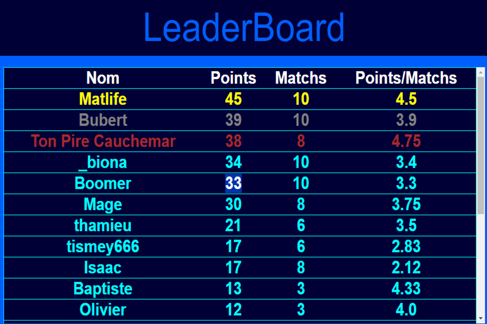
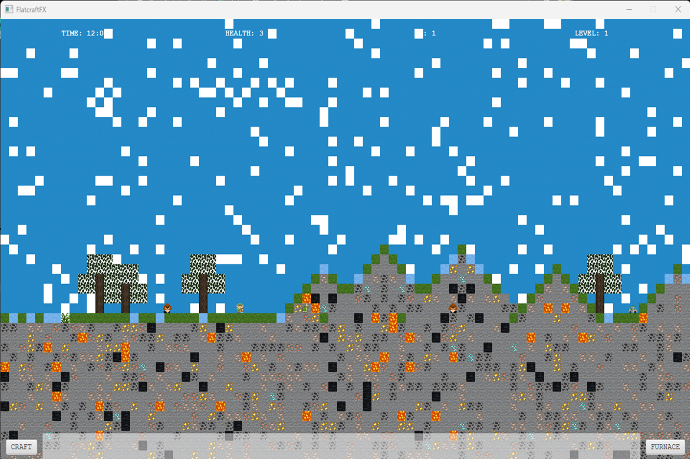
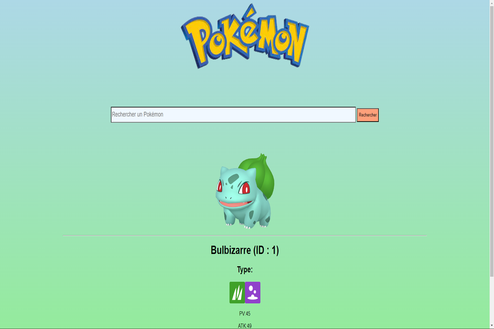

Menu
JO 2024

Ce projet a été codé en PHP avec le framework Laravel, c'est un site qui stocke des informations sur différents sports, les utilisateurs peuvent modifier, effacer ou créer des données.
RAYTRACING

C'est un lanceur de rayon fait en Java qui calcule une scène avec des instructions via un fichier .txt et la transverse sur un fichier photo. Nous avons énormément utilisé Git.
LEADERBOARD
Je dirige un club de poker et j'ai réfléchi à un moyen de mettre tous les membres en compétition. C'est comme ça que le leaderboard a été créé ! Grâce à un algorithme de tri python qui édite également un fichier HTML, les membres peuvent voir leur place dans le classement mais aussi leurs performances.
FLATCRAFT
Ce jeu inspiré d'un mélange de Minecraft et Terraria est un jeu en 2D où le but est de survivre, détruire et (re)construire. Il a été programmé en Java avec une forte utilisation de Git.
MARATHON DU WEB

Bookshelf est un site d'histoires interactif qui a été codé en PHP avec le framework Laravel. Git a énormément été utilisé car c'est le plus gros projet de groupe que nous avons eu à faire: il y avait en tous 9 membres, tous avec un rôle précis.
POKEDEX
Ce Pokedex est directement tiré de l'API Anglaise de Pokémon. Ce site est un programme Python/Flask, il y a aussi du HTML/CSS.
SPACEINVADER

J'ai pu concevoir un remake du pionnier des jeux vidéos : Space Invaders. Programmée avec Java Fx, cette application défie les joueurs. Il n'y a qu'un objectif : protéger la planète d'une invasion alien imminente. Cette image n'est pas une image de l'application.